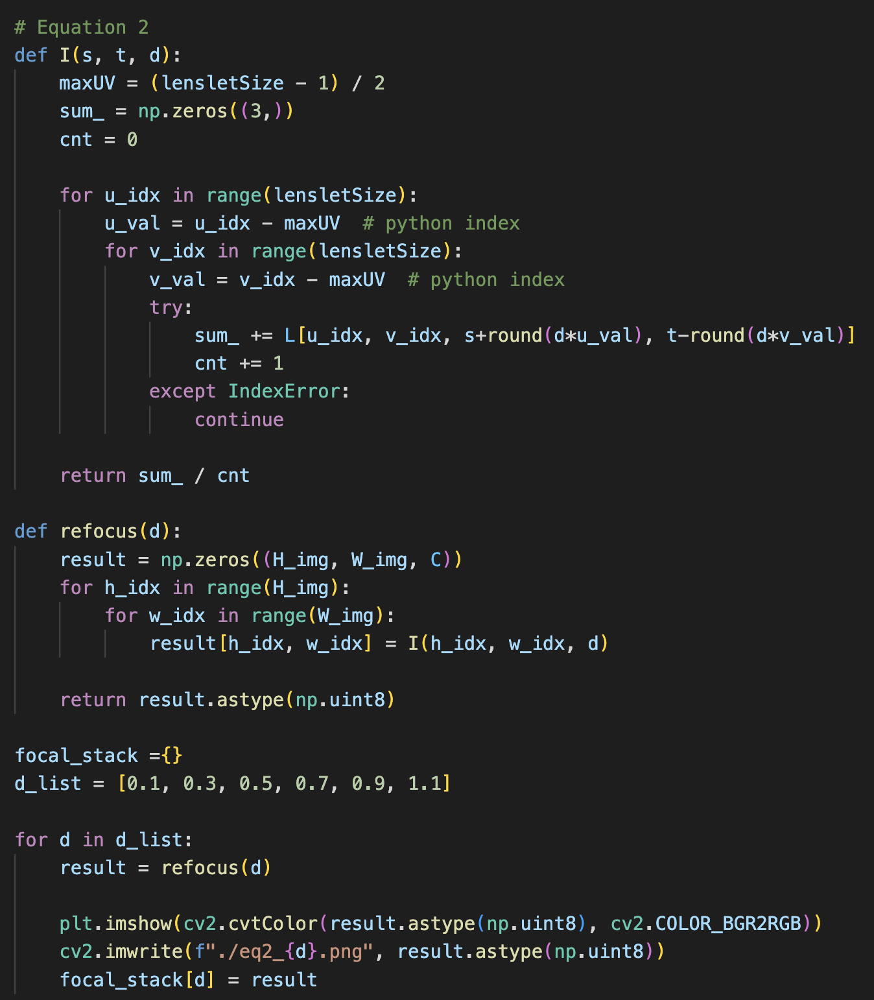
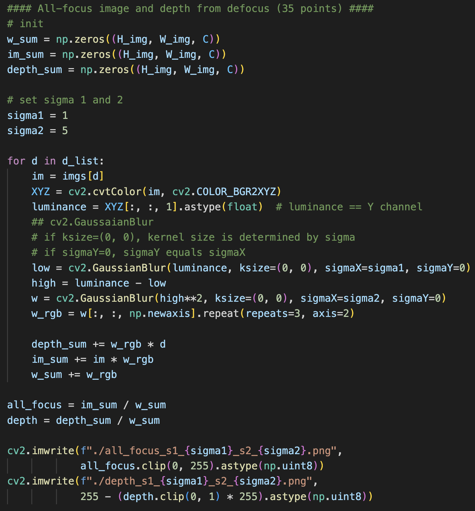
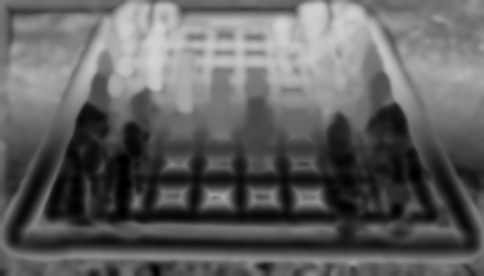

I make an array 'L(u, v, s, t, c)' and fill it with an image corresponding each u and v.
A width and a height size of an image is obtained by dividing a lightfield image's shape by lenslet size.
'::' index in python performs same function in Matlab.
To make sure the array is right, a visualized image at (u=8, v=8) is attached below.
Fig 1. Code for initials.
Fig 2. A visualized image at (u=8, v=8).
Sub-aperture views (20 points)
Using the code below, a mosaic image of sub-aperture views can be obtained and I find that it is same as the expected result in homework pdf.
The mosaic image file is too big to attach on my github.io website, so I upload it on KLMS.
Fig 3. Code for making a mosaic image.
Refocusing and focal-stack generation (40 points)
Before implementing Equation 2, I tested Equantion 1 first and the result is same as the left image of Figure 3 in homwork pdf.
Fig 4. Code for Equation 1 and the result image.
I implement function 'I' without 'c' parameter because three color channels can be computed simultaneously.
RGB pixel values on a refocused image at 'd' can be obtained using function 'I'.
Refocused images with various 'd' are saved and stacked in a dictionary for solving the next problem.
Code and the images of different refocusings is shown below.

Fig 5. Code for refocusing.
Fig 6. The images of different refocusings. ('d' -> 0.1, 0.3, 0.5, 0.7, 0.9 and 1.1)
All-focus image and depth from defocus (35 points)

Fig 7. Code for all-focus image and depth
Using a focal stack I made in previous problem, I implement a algorithm depicted in homework pdf.
Y channel(luminance channel) can be extracted from XYZ color space.
In 'cv2.GaussianBlur' function, I only choose sigma parameter because kernel size can be determined by sigma.
I explore some pairs of sigma parameters for two Gaussian filters and I find that all-focus RGB images are similar regardless of sigmas.
However, in depth maps, increasing sigma2 shows more smoother results. Judging from this experiment, I think a sigma pair (3, 5) works best.
The images for three pairs of sigma are shown below.

Fig 8. All-focus images and depth maps of three sigma pairs. [1, 3], [3, 3] and [3, 5].